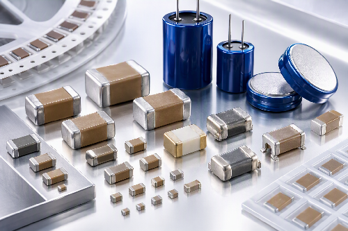

Multilayer Ceramic Capacitors
바이패스·디커플링·필터링용 MLCC.
Viking Tech 커패시터 제품군을 용도별로 확인할 수 있습니다.

바이패스·디커플링·필터링용 MLCC.
고주파 RF 회로의 저손실 응용용 MLCC.
기판 휨 스트레스 대응 단자 구조의 MLCC.
산업 장비와 전원 회로용 MLCC.
Flex crack 단락 위험 저감을 고려한 MLCC.
차량 전장 응용용 제품군.
에너지 저장과 순간 전력 보조용 제품.
전원 평활용 도전성 폴리머 계열.
첨부된 Viking 카탈로그 분류를 기준으로 정리했습니다. 실제 공급 가능 시리즈와 최신 사양은 MAXGAIN SYSTEMS에 문의해 주세요.